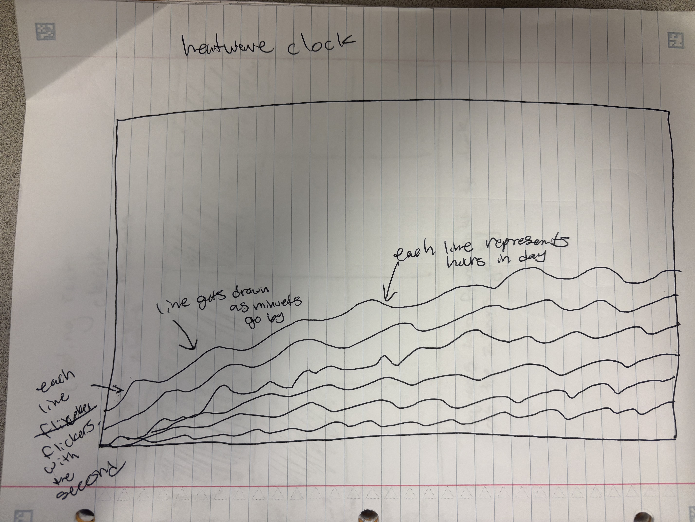
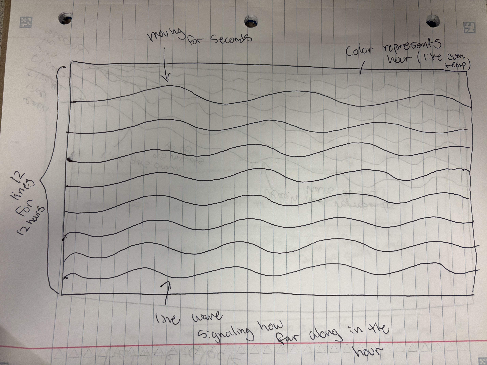
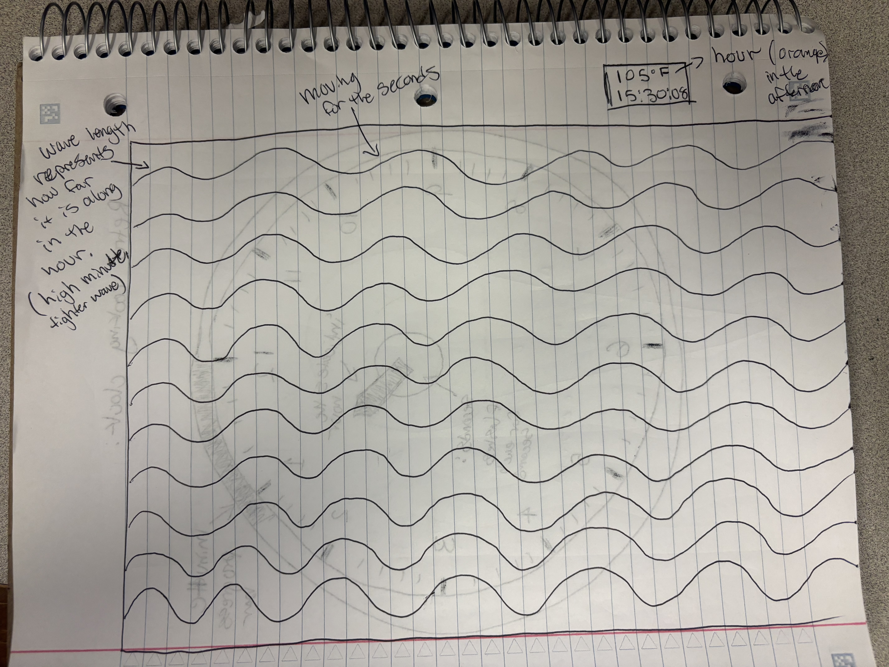
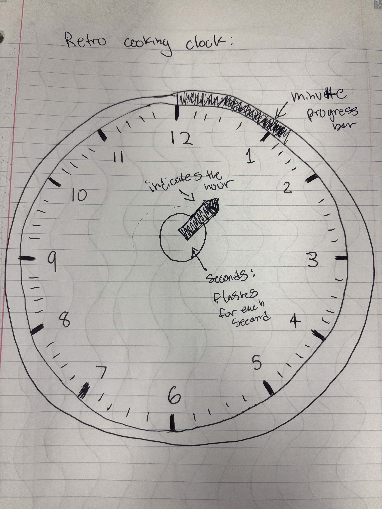
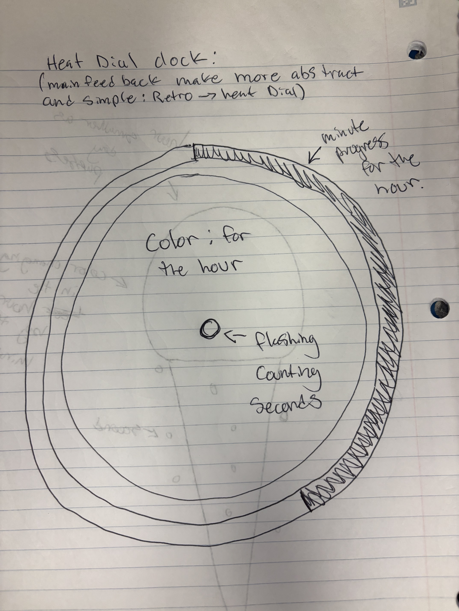
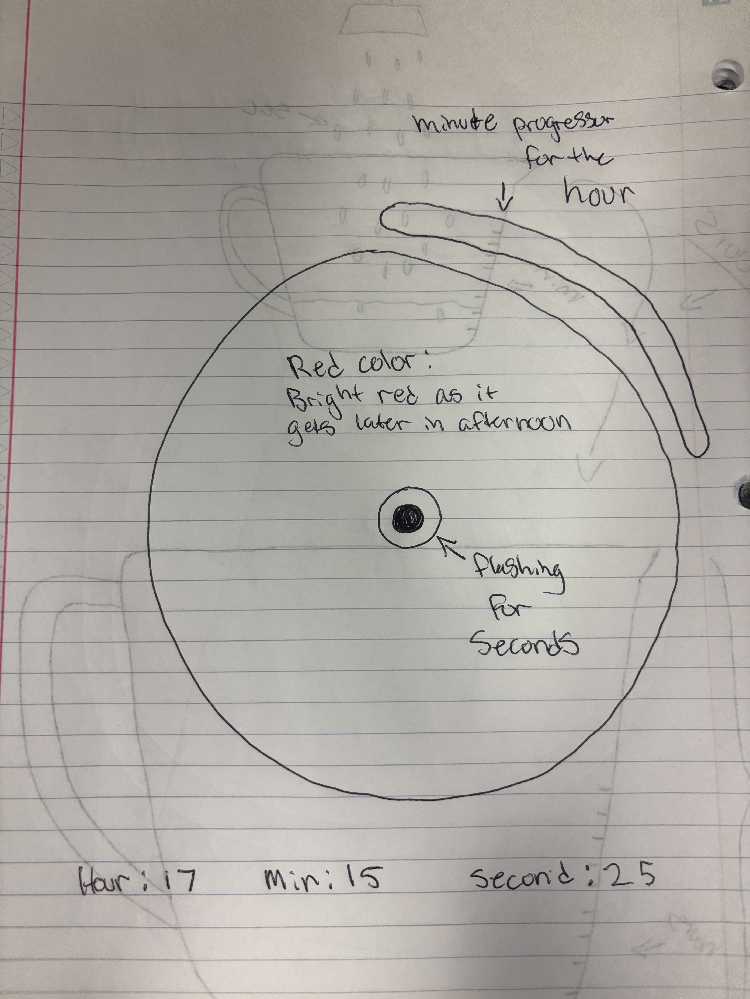

Context:
The Cake Clock visualizes the passage of time through the metaphor of baking and celebration.
It’s designed for people who enjoy creative, food-inspired representations of everyday routines.
The visualization frames time as something that “builds” gradually, like the layers of a cake being
stacked as minutes pass,
inviting a more tactile and comforting interpretation of clock time.
Design decisions:
I used three distinct visual elements to represent time: cake layers for minutes,
candles for hours,
and colorful sprinkles for seconds. The alternating frosting and sponge colors emphasize minute
progression within each hour,
while the candle count offers an intuitive reference to hours in a 12-hour cycle.
The warm, off-white background and rounded shapes evoke softness and warmth, consistent with a baking
theme.
I also added slight motion in the candle flames and sprinkles to make the clock feel alive and playful.
Future work:
I would like to experiment with making the cake layers correspond to 12-hour periods instead of minutes,
or introduce a “baking” transition where the cake rises and colors brown over time.
Another extension could include a user interaction where clicking the cake “blows out” the candles or
resets the clock for the next hour.
Sketch evolution
Evolution of the Cake Clock sketches for HWK 4.A.
Step 1 — initial concept and design. The first idea imagined time as a birthday cake, where candles
represent hours,
sprinkles represent seconds, and each circular layer corresponds to minutes. The concept emphasized time as
a celebration and accumulation of moments.
Step 2 — iteration after peer feedback. The second version simplified the cake to two layers and clarified
how each
time unit would animate — sprinkles flicker for each second, layers fill as minutes pass, and candles signal
the current hour.
The focus shifted toward visual rhythm and color play rather than realism.
Step 3 — polished final version. The design unified all three encodings: candles for hours, cake layers for
minutes, and sprinkles for seconds.
The final layout balanced clarity and whimsy, translating the feeling of baking and celebration into a
visual metaphor for passing time.
Sketch narrative – HWK 4.B
Context:
The Heatwave Clock represents time through the feeling of heat, inspired by baking and the warmth of an
oven.
It’s designed for people who find comfort in kitchen routines and the sensory rhythm of cooking.
Instead of showing numbers, the visualization expresses time as energy in motion, using color and movement
to convey the steady pulse of heat throughout the day.
Design decisions:
I encoded the hour as temperature, using color to transition from cool blues in early morning to
hot orange reds in the afternoon.
The minute controls the wave amplitude, showing how air distortion grows as time passes.
Finally, the second drives subtle horizontal motion, creating a continuous shimmer that evokes
rising heat.
These visual choices make time feel alive, as if it’s breathing through warmth and motion rather than
ticking mechanically.
Future work:
I would like to add interactive “oven modes” where pressing a key switches between ambient heat and baking
temperatures.
Another refinement could include gentle glow effects or ambient sound to deepen the sense of warmth and
immersion.
Sketch evolution
Evolution of the Heatwave Clock sketches for HWK 4.B.

Step 1 — initial concept and design. The idea of time as layers of heat waves was first sketched
here, with early notes on how lines could flicker with seconds and grow over minutes.

Step 2 — iteration after peer feedback. I clarified how color would represent the hour
(temperature) and refined the idea of wave frequency changing as the minute increases.

Step 3 — polished final version. The design settled on twelve layered wave bands, each
representing hours in the day, with seconds driving the shimmer motion and color mapping to oven-like heat.
Sketch narrative – HWK 4.C
Context:
The Radiating Heat Dial reimagines time as warmth rather than movement of hands or numbers.
Inspired by the heat and rhythm of baking, it visualizes the passing of time through color, size, and subtle
motion.
Designed for a quiet, reflective kitchen setting, this clock captures how warmth builds and fades throughout
the day,
representing time as a living pulse rather than a mechanical cycle.
Design decisions:
I encoded the hour as the circle’s size and color, expanding and shifting from cool blue at night
to bright orange during the afternoon.
The minute appears as a glowing outer ring that fills clockwise, representing gradual heat
accumulation.
The second is expressed through a pulsing inner light that blinks like an oven’s heating indicator,
giving the visualization a calm yet steady rhythm.
Together, these choices create an ambient, abstract sense of time that feels warm and alive.
Future work:
I would like to add interactive color modes or user-triggered transitions that simulate different baking
temperatures.
Another idea is to explore sound design — soft hums or clicks that correspond to each second — to strengthen
the sensory connection to time and heat.
Sketch evolution
Evolution of the Radiating Heat Dial sketches for HWK 4.C.

Step 1 — initial concept and design. The first idea started as a Retro Cooking Clock,
with a traditional dial, numbered face, and oven-style pointer for hours. Early notes included a minute
progress bar and a flashing light for seconds.

Step 2 — iteration after peer feedback. Feedback encouraged simplifying and abstracting the design.
The new sketch removed numbers and hands, shifting toward a single circle where color represents hour,
and an outer ring encodes minutes for a cleaner, more conceptual representation.

Step 3 — polished final version. The concept evolved into the Radiating Heat Dial,
a minimal visualization where color and size reflect hourly warmth, the outer arc tracks minutes, and a
pulsing center light shows passing seconds.